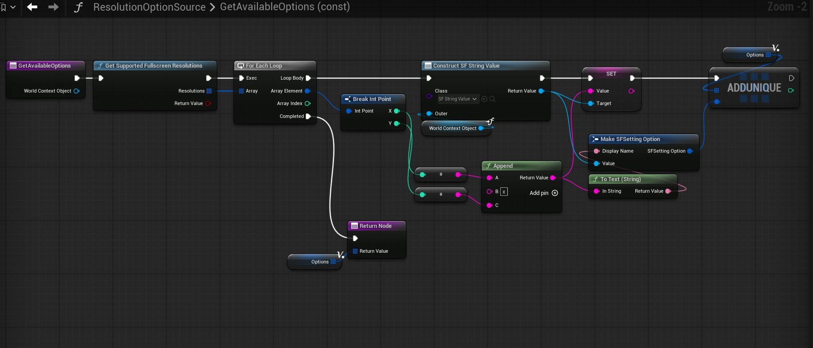
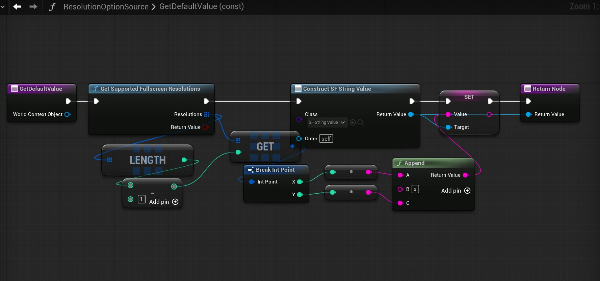
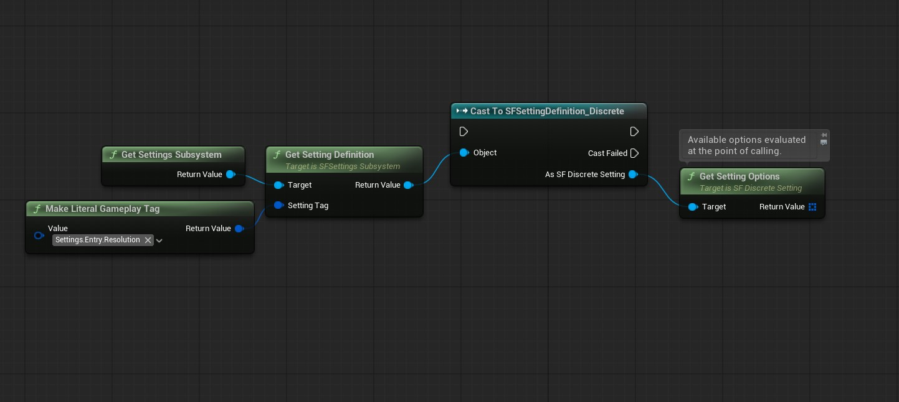

Settings Framework Plugin: Setup Guide
This guide provides step-by-step instructions on how to set up a Blueprint-only project after installing the plugin.
You can reference the Blueprint-only demo project download as you work. Download the Settings Framework plugin from Fab and copy its contents to BPDemo/Plugins/SettingsFramework to make the project functional. The plugin's contents include the following:
- Folders:
Binaries,Content,Resources,Source. - Files:
SettingsFramework.uplugin,README.md.
1. Defining Settings and Categories
- To define a setting, navigate to the Content Browser, right-click, and select Miscellaneous > Data Asset. Choose between
SF Bool Setting,SF Discrete Setting,SF Keybind Setting, orSF Scalar Settingbased on your project's needs. - All settings share common fields, such as Setting Tag, Display Name, and Description.
- Each setting type also includes type-specific fields for further customization. For example, the
SF Scalar Settingdata asset allows you to define the min value, max value, and step size. Tooltips are available on all fields to detail their functionalities. - The
SF Discrete Setting(typically displayed as a dropdown or rotator button) supports either static options defined at design time or dynamic options:- If
Use Dynamic Optionsis set to False, specify your values by populating theStatic Optionsarray. - If
Use Dynamic Optionsis set to True, you must specify an Option Source class (a runtime object used to generate options) and a collection ofDeterminant Setting Tags(settings that, when changed, trigger an options refresh). - The underlying data type for discrete settings is specified by the
Value Wrapper Classfield. Use Gameplay Tags (SFSettingValue_Tag) for pre-defined static options, or strings (SFSettingValue_String) for options generated at runtime. - Note: Further details about dynamic options are available in Section 6.
- If

- To define a category, right-click in the Content Browser, select Miscellaneous > Data Asset, and choose
SF Setting Category. Similar to settings, a category requires an identifying Category Tag and a Display Name. - The
Category Typefield offers two options:- Branch: A category that contains other sub-categories.
- Leaf: A category that contains setting definitions. Within a Leaf, you can specify Setting Groups, which are presentational groupings with display names. Alternatively, you can add all setting definitions directly to the
Settingsarray to display them together in a single group.

- To finalize your configuration, create a Settings Registry. In the Content Browser, right-click, select Miscellaneous > Data Asset, and choose
SF Settings Registry. - Add all root categories to this registry. At initialization, the Settings Subsystem traverses these categories down to the leaf level to gather and asynchronously load all setting definitions. In
WBP_SettingsScreen, root categories appear as major tabs, and their subcategories appear as minor tabs. - To link the registry to the Settings Subsystem, navigate to Edit > Project Settings > Settings Framework and assign your new registry asset to the
Settings Registryfield.- You may need to press Set As Default to prevent values from being reset between Editor sessions.
2. Displaying the Settings Screen UI on the Viewport
If you are using an existing project with Common UI, push WBP_SettingsScreen onto your CommonActivatableWidgetStack and activate it (either automatically via Common UI or by manually calling ActivateWidget). For a blank project, follow these steps:
- Create a widget Blueprint of type
CommonUserWidgetand name itWBP_HUD. This will be added to the viewport to act as the main UI container. - Open
WBP_HUD, add aCommonActivatableWidgetStack, make it a variable, and name itWidget Stack. - Create a Blueprint of type
PlayerControllerand name itBP_PlayerController. On theBegin Playevent, configure a script to addWBP_HUDto the viewport and pushWBP_SettingsScreento its widget stack. (Note: In a full game, this screen is usually pushed via player action, but it is executed on Begin Play here for simplicity).

- Create a Blueprint of type
GameModeBaseand name itBP_GameMode. In the Details panel, assignBP_PlayerControlleras the player controller class. - Navigate to Edit > Project Settings > Maps & Modes and set the
Default GamemodetoBP_GameMode. - To ensure
WBP_SettingsScreenfunctions correctly, you must specify its component widgets. Go to Edit > Project Settings > Settings Framework and assign the following:- Root Tab Button Class:
WBP_MajorTabButton - Branch Tab Button Class:
WBP_MinorTabButton - Branch Tab Content Class:
WBP_CategoryTab_Branch - Leaf Tab Content Class:
WBP_CategoryTab_Leaf - Setting Group Widget Class:
WBP_SettingGroup - Setting Entry Widget Classes:
SFSettingDefinition_Bool->WBP_SettingEntry_CheckboxSFSettingDefinition_Discrete->WBP_SettingEntry_RotatorSFSettingDefinition_Key->WBP_SettingEntry_KeybindSFSettingDefinition_Scalar->WBP_SettingEntry_Slider
- You may need to press Set As Default to prevent values from being reset between Editor sessions.
- Root Tab Button Class:
- Start the game to verify that the settings screen is visible and populated with your settings.

3. Configuring Common UI and Enhanced Input
Common UI and Enhanced Input must be configured to enable gamepad navigation and the keybind widget.
- Navigate to Edit > Project Settings > Game > Common Input Settings and set
Enable Enhanced Input Supportto True. Restart the Editor when prompted. - In the Content Browser, right-click and select Input > Input Action to create an Input Action Blueprint named
IA_UI_Confirm. Create a second one namedIA_UI_Back. These act as the primary yes/no actions. - Create a Blueprint of type
CommonUIInputDatanamedBP_InputData. In its Details panel, assignIA_UI_Confirmto theEnhanced Input Click Actionfield andIA_UI_Backto theEnhanced Input Back Actionfield. - Return to Edit > Project Settings > Game > Common Input Settings and assign
BP_InputDatato theInput Datafield. - (Optional) On the same screen, set up controller data assets under Platform Input > Windows (or target platform) > Default > Controller Data. This assigns input keys to icons, allowing Common UI to display button prompts.
- Go to Edit > Project Settings > Engine > General Settings and change the
Game Viewport Client ClasstoCommonGameViewportClient. - In the Content Browser, right-click, select Input > Input Mapping Context, and name it
IMC_DefaultUI. - Open the IMC and add your yes/no actions (
IA_UI_Confirm,IA_UI_Back) to the Default Key Mappings > Mappings. Also add the input actions included with the plugin (IA_UI_PrevTab_Major,IA_UI_NextTab_Major,IA_UI_PrevTab_Minor,IA_UI_NextTab_Minor,IA_UI_Save,IA_UI_Revert,IA_UI_ResetToDefault) and assign your preferred input keys.

- Navigate to Edit > Project Settings > Engine > Enhanced Input and add
IMC_DefaultUIto theDefault Mapping Contexts. (Note: In a full game, IMCs are typically activated/deactivated at runtime depending on context, but it is added as the only Default Mapping Context here for simplicity) - Start the game. Input keys will now successfully perform actions, and UI action prompts will appear if controller data assets were configured.

4. Setting up Visibility and Editability Conditions
Setting widgets can update their states dynamically during runtime using the Visibility Conditions and Editability Conditions fields within their data assets. In this example, the Texture Quality setting is only editable when the Graphics Preset is set to "Custom".
- Create a Blueprint of type
SFSettingConditionand name itGraphicsPresetCustom. - Override the
IsConditionMetfunction. Script this function to return True if the Graphics Preset is Custom, and False otherwise.

- Save the condition Blueprint and assign it to the
EA_TextureQualitysetting definition data asset. - Add a new element to the
Editability Conditionsfield and assign theGraphicsPresetCustomBlueprint. - Note: A setting is disabled if any condition in its
Editability Conditionsreturns False. Similarly, a setting is hidden if any condition in itsVisibility Conditionscollection returns False.

- Start the game. Texture Quality will remain disabled on Low, Medium, and High presets, and will only unlock when the preset is changed to Custom.

5. Configuring Reactive Settings
Building on the previous section, you may want Texture Quality to automatically update its value to match the chosen Graphics Preset when set to Low, Medium, or High. This relies on the Settings Subsystem's API.
- Open the Blueprint that controls your setting's logic (in this case, the Player Controller).
- On the
Begin Playevent, bind a handler function to the Settings Subsystem'sOn Setting Value Changeddelegate. You can immediately call the handler directly with the determinant setting's value to ensure logic executes on initialization.

- Inside the handler function, create a script that forces the Texture Quality value to match the Graphics Preset value (provided the preset is not Custom).


- Start the game. Texture Quality will now automatically mirror the Graphics Preset when it is set to Low, Medium, or High.

6. Configuring Runtime Dynamic Options
Static options are not always viable for discrete settings. For instance, a Resolution setting must query the monitor's supported formats, and an Audio Output Device setting must list connected hardware. The following steps show the process for evaluating and populating the options for the Resolution setting.
- Create a Blueprint of type
USFSettingOptionSourceand name itResolutionOptionSource. - Override the
Get Available Optionsfunction. This function should return an array ofSFSettingOptionstructs representing selectable options (containing a localizedDisplay Nameand an underlyingSFSettingValue). The example script below retrieves supported fullscreen resolutions:

- Override the
Get Default Valuefunction. This determines whatSFSettingValuethe setting reverts to when the user selects Revert to Default. For resolutions, this should generally return the largest available option.

- Open the Resolution setting definition asset and assign the
ResolutionOptionSourceBlueprint to theOption Sourcefield. During initialization, the subsystem will now use this class to evaluate available options. - You can also assign Gameplay Tags to the
Determinant Setting Tagsfield. When settings corresponding to these tags are altered, a dynamic option refresh is triggered by theWBP_SettingEntry_Rotatorwidget. - To trigger refreshes manually or via custom logic, call
Refresh Optionsfrom the rotator entry widget. Alternatively, retrieve the setting definition asset via Gameplay Tag, cast it toSFSettingDefinition_Discrete, and callGet Setting Options. This returns a freshly evaluated array of selectable options.
